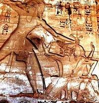

Wed, 29 Feb 2012 01:15:52 PST
Precios y salarios en la antigua Roma
Precios y salarios en la antigua Roma
Hoy en día, tal como están las cosas, los que tenemos la suerte de tener un salario, comprobamos como disminuye mes a mes… y gracias. Nos vamos a dar un paseo por la antigua Roma, y gracias al Edicto de Precios Máximos o el Edicto de Diocleciano, vamos a ver qué salarios recibían algunas profesiones [...]Precios y salarios en la antigua Roma escrito por Javier Sanz en: Historias de la Historia
También puedes seguirnos en Twitter, Facebook y Google+
Hoy en día, tal como están las cosas, los que tenemos la suerte de tener un salario, comprobamos como disminuye mes a mes… y gracias. Nos vamos a dar un paseo por la antigua Roma, y gracias al Edicto de Precios Máximos o el Edicto de Diocleciano, vamos a ver qué salarios recibían algunas profesiones y a qué precios tenían que hacer frente.
Cayo Aurelio Valerio Diocleciano Augusto, para los amigos Diocleciano, nació en el seno una familia humilde y fue escalando puestos en la jerarquía militar hasta convertirse en el comandante de la caballería del emperador Caro. Tras la muerte de Caro y de su hijo Numeriano, Diocleciano fue aclamado emperador por el ejército y gobernó desde el 20 de noviembre de 284 hasta el 1 de mayo de 305.
Durante lo segunda mitad del siglo III el Imperio Romano sufre una grave crisis -crisis imperial- alimentada por las guerras civiles, las luchas por el poder, la presión de los bárbaros, la peste y una profunda depresión económica agravada por los caprichos monetarios (acuñando moneda propia) de los codiciosos emperadores. En 301, para poner un poco de orden, Diocleciano decide promulgar el Edicto de Precio Máximos para estabilizar la moneda y atemperar la grave crisis económica. El cumplimiento del edicto era obligatorio en todo el Imperio y, además, fijar precios superiores estaba penado con la muerte. Esto son algunos de los precios y salarios, en denarios, que se fijaron en el edicto:
- Trabajador agrícola - 25 al día
- Carpintero o albañil – 50 al día
- Pintor (brocha gorda) – 75 al día
- Pintor (de cuadro) – 150 al día
- Tejedor de lana – 175 por manto
- Panadero – 50 al día
- Construcción de barcos, fluviales y marítimos – 50 y 60 al día respectivamente.
- Arriero – 25 al día
- Barbero/peluquero – 2 por persona
- Limpiador de cloacas - 25 al día
- Escriba, para mejorar la escritura – 25 por cada 100 líneas. Redacción de peticiones o documentos públicos – 10 por cada 100 líneas.
- Maestro: desde 50 al mes por alumno para los de niños hasta 250 al mes por alumno para los de Retórica.
- Legionario medio – 15.400 al año incluido el valor del trigo que recibían al año.
- Guardia Pretoriana – 19.000 al año incluido el trigo.
- Trigo, un modio (8,75 kg.) – 100
- Cebada y centeno, un modio – 60
- Lentejas, un modio – 100
- Sal, un modio – 100
- Judías, un modio – 100
- Arroz, un modio – 200
- Vino, como un Rioja o Ribera del Duero, un sextarius (1/2 litro) – 30
- Vino de mesa o de la casa, un sextarius – entre 8 y 16
- Cerveza gala, un sextarius - 4
- Cerveza egipcia, un sextarius – 2
- Miel, como la de la Alcarria, un sextarius – 40
- Aceite de oliva, un sextarius – 40
- Carne de cerdo o de venado, una libra (326 gramos) - 12
- Carne de vaca, una libra – 8
- Un pollo – 60
- Un faisán – 250
- Pescado de mar, una libra – entre 16 y 24. Para los de río, un libra – entre 8 y 12
- Pescado salado, una libra – 6
- Mantequilla, una libra – 16
Es muy difícil hacer una comparativa de estos precios con los actuales pero puede servir para hacernos una idea de lo que podía adquirir cada ciudadano romano con su salario y las diferencias entre las distintas profesiones. Además, también hay que tener en cuenta que el porcentaje del salario que gastamos en alimentos nada tiene que ver con el empleado en la antigua Roma. Como curiosidades: la gratificación por una victoria de un gladiador podría equivaler a la salario anual de un maestro y el auriga Cayo Apuleyo Diocles, el Fernando Alonso de la época, llegó a ganar en toda su carrera unos 35 millones de sestercios (un denario – cuatro sestercios) en el siglo II.
Fuentes: Forum Ancient Coins, Constantine the Great coins, Artículos relacionados:
- December
- El error en un cuadro del siglo XIX todavía se paga hoy
- Las bodas de Nerón… con sus novios
- Clases de putas en la antigua Roma.
- Archienemigos de Roma. Alarico
Precios y salarios en la antigua Roma escrito por Javier Sanz en: Historias de la Historia
También puedes seguirnos en Twitter, Facebook y Google+
Mon, 27 Feb 2012 01:45:44 PST
El latín nos explica por qué cualquiera puede ser ministro pero no maestro
El latín nos explica por qué cualquiera puede ser ministro pero no maestro
Antes de dar la oportuna explicación os voy a contar una anécdota, que muchos ya conoceréis, sobre la importancia del latín. En cierta ocasión José Solís Ruiz, ministro de Trabajo durante el régimen franquista y natural de Cabra (Córdoba), le discutía al político y rector de la Universidad Complutense, profesor Muñoz Alonso, para qué servía [...]El latín nos explica por qué cualquiera puede ser ministro pero no maestro escrito por Javier Sanz en: Historias de la Historia
También puedes seguirnos en Twitter, Facebook y Google+
Antes de dar la oportuna explicación os voy a contar una anécdota, que muchos ya conoceréis, sobre la importancia del latín. En cierta ocasión José Solís Ruiz, ministro de Trabajo durante el régimen franquista y natural de Cabra (Córdoba), le discutía al político y rector de la Universidad Complutense, profesor Muñoz Alonso, para qué servía el latín. El profesor le respondió:
Por de pronto, señor ministro, para que a Su Señoría, que ha nacido en Cabra, le llamen egabrense y no otra cosa.

Y volviendo al título de este post, vamos a servirnos de la etimología, y el latín, para explicar por qué cualquiera puede ser ministro pero no maestro.
El término maestro deriva de magister y este, a su vez, del adjetivo magis que significa más o más que. El magister lo podríamos definir como el que destaca o está por encima del resto por sus conocimientos y habilidades. Por ejemplo, Magister equitum (jefe de caballería en la Antigua Roma) o Magister militum (jefe militar).
El término ministro deriva de minister y este, a su vez, del adjetivo minus que significa menos o menos que. El minister era el sirviente o el subordinado que apenas tenía habilidades o conocimientos.
Por tanto, queda demostrado que para ser ministro no hace falta ser… nada.
Fuente: Memoria de la Historia – Carlos FisasArtículos relacionados:
- Solidaridad
- Las torturas de la Inquisición
- El Vaticano se basa en dos mentiras
- Dieron su hoy por nuestro mañana.
- Historia de una deuda moral con el pueblo saharaui
El latín nos explica por qué cualquiera puede ser ministro pero no maestro escrito por Javier Sanz en: Historias de la Historia
También puedes seguirnos en Twitter, Facebook y Google+
Fri, 24 Feb 2012 01:30:11 PST
El día que los libios y los pueblos del mar perdieron más miembros
El día que los libios y los pueblos del mar perdieron más miembros
Los pueblos del mar eran una confederación de marineros del Mediterráneo que durante el segundo milenio antes de Cristo asaltaban y atacaban las poblaciones de Egipto y el Cercano Oriente. Las incursiones de esta confederación, que no era permanente ni fijos sus componentes, eran frecuentes en el delta del Nilo y en las poblaciones costeras, [...]El día que los libios y los pueblos del mar perdieron más miembros escrito por Javier Sanz en: Historias de la Historia
También puedes seguirnos en Twitter, Facebook y Google+
Los pueblos del mar eran una confederación de marineros del Mediterráneo que durante el segundo milenio antes de Cristo asaltaban y atacaban las poblaciones de Egipto y el Cercano Oriente. Las incursiones de esta confederación, que no era permanente ni fijos sus componentes, eran frecuentes en el delta del Nilo y en las poblaciones costeras, también se aliaban con los enemigos de Egipto para rapiñar todo lo que pudiesen.
Merneptah fue el cuarto faraón de la XIX dinastía del Antiguo Egipto que llegó al poder a los sesenta años de edad. En 1208 a.C. emprendió una batalla contra los libios (de la tribu libu y del que deriva el nombre de Libia) a los que, lógicamente, se habían unido los pueblos del mar. La victoria de Merneptah fue total, como se puede comprobar en el templo de Karnak donde se representa la campaña del faraón:

Además, también se hace referencia y se detallan todos los trofeos obtenidos en la batalla que los escribas, como ya comentamos en las excusas para no ir a trabajar a los pirámides, contaban y anotaban. La práctica egipcia, respecto a los trofeos de guerra, era cortar el pene de los enemigos muertos y su mano derecha si el enemigo estaba circuncidado. El recuento de todos los penes y manos arrojó el siguiente desglose de bajas enemigas:
6.359 Libios (entre los que había 6 generales)
2.201 de Ekwesh (identificado como Acaya, región del oeste de Grecia)
222 de Shekelesh (identificado como Sicilia)
742 de Tursha (identificado como Tirrenia o Etruria)
200 de Shardana (identificado como Sardinia-Cerdeña)
Fuentes: The end of the Bronze Age: changes in warfare and the catastrophe – Robert Drews, A mind of its own: a cultural history of the penis – David M. FriedmanArtículos relacionados:
- Egipto cayó en manos de los persas por los gatos
- El origen de la expresión “tócame los…”
- Una solución faraónica para las molestas moscas
- Excusas que aceptaban los faraones para no ir a trabajar a las pirámides
- La ruta de la seda subterránea.
El día que los libios y los pueblos del mar perdieron más miembros escrito por Javier Sanz en: Historias de la Historia
También puedes seguirnos en Twitter, Facebook y Google+
Wed, 22 Feb 2012 01:40:18 PST
Cuando en España un kilo de pan pesaba 800 gramos
Cuando en España un kilo de pan pesaba 800 gramos
Espero que este post de hoy no sirva para que algún iluminado piense que también sería una buena medida anticrisis… es sólo un detalle de cómo no hacer las cosas pero que, lamentablemente, se hizo y, además, vía Decreto en 1918. En 1917, y en plena Primera Guerra Mundial, España vivía su particular crisis: un [...]Cuando en España un kilo de pan pesaba 800 gramos escrito por Javier Sanz en: Historias de la Historia
También puedes seguirnos en Twitter, Facebook y Google+
Espero que este post de hoy no sirva para que algún iluminado piense que también sería una buena medida anticrisis… es sólo un detalle de cómo no hacer las cosas pero que, lamentablemente, se hizo y, además, vía Decreto en 1918.
En 1917, y en plena Primera Guerra Mundial, España vivía su particular crisis: un movimiento sindical militar (las Juntas de Defensa), un movimiento político (la Asamblea de Parlamentarios de orientación catalanista que tuvo lugar en Barcelona) y un movimiento social (la huelga general convocada por UGT y CNT). Tras las Elecciones Generales de febrero de 1918 llega al poder Antonio Maura, quien dirigió un gabinete de concentración con conservadores y liberales.
Una de las primeras medidas que tuvo que tomar fue atajar el alto precio de un alimento básico… el pan. La teoría: las tahonas subían los precios porque había subido el precio de la harina, los fabricantes de harina porque había subido el del trigo y los agricultores lo subían porque decían que había poco trigo. La práctica: había trigo suficiente, el problema es que los acaparadores y/o especuladores lo acumulaban para que la escasez en el mercado hiciese subir los precios. Había que sacar al mercado el trigo oculto. Para ello, el nuevo gobierno tenía dos opciones: una, incautar el trigo oculto para sacarlo al mercado y, otra, fijar el precio del trigo a un precio que resultase interesante para que los especuladores lo sacasen. Lamentablemente se tomó esta última que conseguía sacar el trigo oculto pero a un precio tal, que el objetivo de rebajar el precio del pan quedaba muy lejos, incluso podía subirlo. Así que, hubo que tomar una drástica medida:
En 1918, y vía decreto, el kilo de pan pasó a pesar 800 gramos.
No se modificaron las unidades de medida, sólo que el pan tuvo esta caprichosa variación para distorsionar su precio.
Fuentes: Hemeroteca ABC (1918), Historiadores de la Cocina, Menudas historias de la historia – Nieves Concostrina, La Casa del Arce rojoArtículos relacionados:
- El pulpo Paul, la ouija y el oráculo de la gallina
- Los favores políticos causan embarazos.
- Un indio equivale a veinte
- Una mosca le salvó de ser expropiado
- La pregunta que ridiculizó a un visionario.
Cuando en España un kilo de pan pesaba 800 gramos escrito por Javier Sanz en: Historias de la Historia
También puedes seguirnos en Twitter, Facebook y Google+